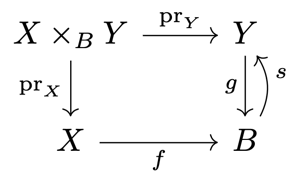

2 Constructions
Subspaces and induced topology
Theorem 2.6
Continuity from covers
\(\begin{align*} \text{Let } & f : X \to Y \text{ be a map between topological spaces} \\ & (A_i)_{i \in I} \text{ be an open cover of } X \end{align*}\)
Proof
Inclusions \(j_i : A_i \to X\) are continuous, so \(f|_{A_i} = f \circ j_i\) is continuous.
Let \(U \in \O_Y\).
\(\begin{align*} &\implies f_i^{-1}(U) \in \O_X \quad \forall\ i \in I \\ &\implies f^{-1}(U) = \bigcup_{i \in I} f_i^{-1}(U) \in \O_X \end{align*}\)
Definition 2.9
Induced topology
Let \((X, \O)\) be a topological space and \(f : Y \to X\) a set map. Then,
is the topology on \(Y\) induced by \(f\).
Theorem 2.10
Universal property of of the induced topology
\(\begin{align*} \text{Let } & (X, \O) \text{ be a topological space} \\ & f : Y \to X \text{ be a set map} \end{align*}\)
Proof
Claim: \(\O_f\) is a topology on \(Y\).
- \(f^{-1}(\emptyset) = \emptyset \in \O_f\)
- \(f^{-1}(X) = Y \in \O_f\)
- \(\O\) is closed under arbitrary unions and pairwise intersections. Thus, so is \(\O_f\).
The preimage \(f^{-1}(U)\) needs to be open for all \(U \in \O\) for \(f\) to be continuous. Thus, it is the coarsest topology on \(Y\) such that \(f\) is continuous.
Let \(\mathcal{R, S}\) be topologies on \(Y\) satisfying \((2)\).
\(\begin{align*} \implies& \id_Y : (Y, \mathcal R) \to (Y, \mathcal R) \text{ is continuous} \\ \overset{(2)}{\implies}& f \circ \id_Y : (Y, \mathcal R) \to (X, \O) \text{ is continuous} \\ \end{align*}\)
Consider \(g = \id_Y : (Y, \mathcal R) \to (Y, \mathcal S)\).
\(\begin{align*} \implies& f \circ g : (Y, \mathcal R) \to (X, \O) \text{ is continuous} \\ \overset{(2)}{\implies}& g \text{ is continuous} \\ \implies& \mathcal S \subseteq \mathcal R \end{align*}\)
By symmetry, \(\mathcal R \subseteq \mathcal S\). Thus, \(\mathcal R = \mathcal S\).
Embeddings
Definition 2.11
Embedding
A continuous map \(f : X \to Y\) is called an embedding if \(f\) is injective and \(X\) has the topology induced by \(f\).
Remark 2.12
Equivalent definitions of embeddings:
- \(f\) is a homeomorphism onto the subspace \(\Im f \subseteq Y\).
- \(f\) is a continuous, injective and open/closed map onto \(\Im f\).
Example 2.13
The logarithmic spiral
is an embedding.
The inverse stereographic projection
is an embedding.
Example 2.14
Consider \(S^1 \subseteq \R^2\) with the subset topology. The canonical continuous, bijective map \(\phi : [0, 1) \to S^1\) is not a homeomorphism:
\([0, a) = (-1, a) \cap [0, 1)\) is open in \([0, 1)\), but \(\phi([0, a))\) is not open in \(S^1\).
For \(c \in \R\setminus\Q\), the map
is injective and its image is dense, but not an embedding with respect to the discrete topology on \(\Z\).
Definition 2.15
Knot
An embedding \(f : S^1 \to \R^3\) is called a knot.
- Two knots are equivalent if there is a self-homeomorphism of \(\R^3\) that maps one to the other.
- A knot is called trivial if it is equivalent to the canonical embedding \(S^1 \to \R^3\) (the unknot).
Remark 2.17
Two smooth knots are equivalent iff the complements of their images in \(\R^3\) are homeomorphic (Gordon-Luecke, 1989).
Products and initial topology
Definition 2.18
Initial topology
Consider a family of topological spaces \((X_i)_{i \in I}\), a set \(Y\) and maps \(f_i : Y \to X_i\). The collection
is a subbasis for the initial topology on \(Y\).
Theorem 2.19
Universal property of the initial topology
Let \((X_i, f_i)_{i \in I}\) be as in D.2.18, and \(\O\) the initial topology on \(Y\).
Proof
Analogous to that of T.2.10.
Definition 2.20
Product topology
Consider a family of topological spaces \((X_i)_{i \in I}\) and the cartesian product
with projection maps \(pr_i : X \to X_i\).
- For a subset \(U_i \subseteq X_i\), the cylinder over \(U_i\) is
- The cylinders over open sets \(U_i \in \O_{X_i}\) form a subbasis for the product topology:
Remark 2.21
The corresponding basis is given by the cylinder sets
Remark 2.22
- Allowing arbitrary products of open sets yieds the box topology, which in general has less desirable properties.
- The two topologies (which?) clearly coincide for finite index sets \(I\).
Example 2.23
The product topology on \(\R^n\) is the one induced by the euclidean metric.
\(S^1 \times [0, 1]\) is homeomorphic to the the annulus \(A = \{x \in \R^2 \mid 1 \leq \|x\| \leq 2\}\).
Consider the map \(f : X \to Y\), and its graph \(\Gamma(f) = \{(x, f(x)) \mid x \in X\} \subseteq X \times Y\). \(f\) is continuous if \(x \mapsto (x, f(x))\) is an embedding \(X \to \Gamma(f)\).
The map
is an embedding of binary sequences into \(\R\) (disccrete topology on \(\{0, 1\}\) and the product topology on \(\{0, 1\}^\N\)). The image is the Cantor set.
Proposition 2.24
Component projections of a product are open
For a product
of topological spaces, the projections \(\pr_i : X \to X_i\) are open maps.
Proof
Every open set can be written as a union of their basis sets, so it is sufficient to show that it is open for cylinder sets:
Let \(U_K \in \B\) be a cylinder set with
Then, we easily have
which is open in \(X_i\).
Remark 2.25
Product topologies satisfy the following property of products:
\(\begin{align*} \text{Let } & Z \text{ be a topological space} \\ & (g_i : Z \to X_i)_{i \in I} \text{ a family of continuous maps} \end{align*}\)
Pullbacks
Definition 2.26
Pullback
Consider two maps \(f : X \to B\) and \(g : Y \to B\). The pullback of \(f\) and \(g\) is
The diagram
is called a pullback square.
Remark 2.27
Pullback combine products and subspaces:
- The pullback is also called the fiber product, as
- For the one-point space \(B = \{*\}\), the pullback is the product \(X \times Y\).
Theorem 2.28
Universal property of the pullback
Consider a commutative square of continuous maps:

Then, there exists a unique map \(m : Z \to X \times_B Y\) such that the following diagram commutes:
Proof
Define \(m : Z \to X \times_B Y\) by
It is well defined, as \(f \circ p(z) = g \circ q(z)\).
?
Both \(p\) and \(q\) are continuous.
\(\begin{align*} \implieshref{#t219}{T.2.19}& (p, q) = i \circ m : Z \to X \times Y \text{ is continuous} \\ \implieshref{#t210}{T.2.10}& m \text{ is continuous} \end{align*}\)
Corollary 2.29
Pullbacks of sections
Consider the section \(s : B \to Y\) such that \(g \circ s = \id_B\) and the diagram

Then, a section to \(\pr_X : X \times_B Y \to X\) is given by
as in the diagram

Quotient spaces
Definition 2.30
Quotient topology
\(\begin{align*} \text{Let } & X \text{ be a topological space} \\ & \sim \text{ be equivalence relation on } X \\ & p : X \to X/_\sim \text{ be the canonical projection} \end{align*}\)
The topology
is called the quotient topology. The space \(X/_\sim\) is called the quotient space.
Remark 2.31
The quotient topology is the finest topology on \(X/_\sim\) such that \(p\) is continuous.
Example 2.32
Consider the space \(X = [0, 1]\) and the equivalence relation \(0 \sim 1\). Then, the quotient space \(X/_\sim\) is homeomorphic to \(S^1\).
\(X = [0, 1]^2\), \((0, a) \sim (1, 1-a)\). Then, \(X/_\sim\) is homeomorphic to the Möbius strip.
\(X = [0, 1]^2\), \((0, a) \sim (1, a)\) and \((b, 0) \sim (b, 1)\). Then, \(X/_\sim\) is homeomorphic to a torus \(T^2 \cong S^1 \times S^1\).
\(X = \R^2\), \(x \sim y \iff x - y \in \Z^2\). Then, \(X/_\sim\) is homeomorphic to the torus \(T^2\).
\(X = \R^{n+1} \setminus \{0\}\), \(0 \neq \lambda \in \R\), \(x \sim y \iff x = \lambda y\). Then, \(X/_\sim\) is homeomorphic to the projective space \(\R P^n\).
\(X = D^n = \{x \in \R^n \mid \|x\| \leq 1\}\), \(x \sim -x \iff \|x\| = 1\). Then, \(X/_\sim\) is homeomorphic to the projective space \(\R P^n\).
Definition 2.33
Quotient map
A map \(f : X \to Y\) is called a quotient map if
We have \(Y \cong X/_{\sim f}\), with the relation \(a \sim_f b \iff f(a) = f(b)\).
Proposition 2.34
Open/closed surjections are quotient maps
Any open or closed continuous surjection is a quotient map.
Proof
\(\begin{align*} \text{Let } & f : X \to Y \text{ be an open, continuous, surjective map} \\ & V \subseteq Y \text{ be a set s.t. } f^{-1}(V) \in \O_X \end{align*}\)
\(\begin{align*} & \implies f(f^{-1}(V)) = V \in \O_Y \\ & \implies f \text{ is a quotient map} \end{align*}\)
Analogously for closed maps.
Remark 2.35
Some quotient maps are neither open nor closed. The projection of
onto the first coordinate is such a map.
Final topologies and topological sums
Definition 2.36
Final topology
The final topology for a family of maps \((f_i : X_i \to Y)_{i \in I}\) is
Remark 2.37
- The initial topology is specified by a subbasis.
- In contrast, the final topology has a simple explicit form.
Theorem 2.38
Universal property of the final topology
\(\begin{align*} \text{Let } & (X_i)_{i \in I} \text{ be a family of topological spaces} \\ & Y \text{ be a set} \\ & f_i : X_i \to Y \text{ be set maps} \end{align*}\)
Proof
Analogous to that of T.2.10.
Definition 2.39
Topological sum
\(\begin{align*} \text{Let } & (X_i)_{i \in I} \text{ be a family of topological spaces} \\ & Y = \coprod_{i \in I} X_i = \bigcup_{i \in I} \Big(X_i \times \{i\}\Big) \text{ be their disjoint union} \end{align*}\)
The final topology for the inclusions \(\operatorname{in}_i : X_i \to Y\) is
and the resulting space is called the sum or coproduct of the \((X_i)_{i \in I}\).
We write \(A+B\) for the sum of twp spaces \(A\) and \(B\).
Pushouts
Definition 2.40
Pushout
For two maps \(f : A \to X\) and \(g : A \to Y\), the pushout of \(f\) is the quotient space
for the equivalence relation \(\sim\) generated by \(f(a) \sim g(a)\) for all \(a \in A\).
The diagram
is called a pushout square.
Theorem 2.41
Universal property of the pushout
Consider a commutative square of continuous maps
Then, there exists a unique map \(m : X +_A Y \to Z\) such that the following diagram commutes:

Proof
Similar to that of T.2.28.
Example 2.42
\(A = \emptyset \implies X +_\emptyset Y = X + Y\) (trivial equivalence relation).
\(A \subseteq X\) and \(Y = \{*\}\). Then, \(X +_A Y = X/A\).
\(A \subseteq X\) and \(g : A \to Y\) continuous. Then, \(Y \cup_g X = X +_A Y\) is called the adjunction space.
- The relation identifies \(A \subseteq X\) with the image \(\Im g \subseteq Y\) (attaching \(X\) to \(Y\) along \(g\)).
- For \(X = D^n\), \(A = S^{n-1}\), this is called attaching an \(n\)-cell.
CW complexes
Example 2.43
Attaching a \(1\)-cell to a point gives a circle \(S^1\)

More generally, attaching an n-cell to a point gives an \(n\)-sphere \(S^n\).
Attaching two \(1\)-cells to a point gives a bouquet of two circles.
Attaching a \(2\)-cell to a bouquet of two circles gives a torus \(T^2\).
Attaching a \(2\)-cell to a circle along a map \(S^1 \to S^1\) that winds around the circle twice gives a projective plane.
Definition 2.44
CW complex
Let \(K^0\) be a discrete space. For \(n \in \N\), let \(K^n\) be obtained by attaching a sum of \(n\)-cells to \(K^{n-1}\).
- The maps \(S^n \to K^{n-1}\) defining the cell-attachment are called attaching maps.
- The resulting pushout maps \(D^n \to K^n\) are called characteristic maps.
More generally, the space
with the final topology for the inclusions \((K^n \hookrightarrow K)_{n \in \N}\) is called a CW complex.
- For each \(n\), the complex \(K^n\) is called the \(\bm n\)-skeleton of \(K\).
- The open cells of \(K\) are the homeomorphic images of the open \(n\)-balls under the characteristic maps.
Remark 2.45
The name "CW" stands for "closure-finite" and "weak" topology.
- The closure of any cell intersects only finitely many cells
- Weak topology is an alternative name for the final topology of the inclusions.